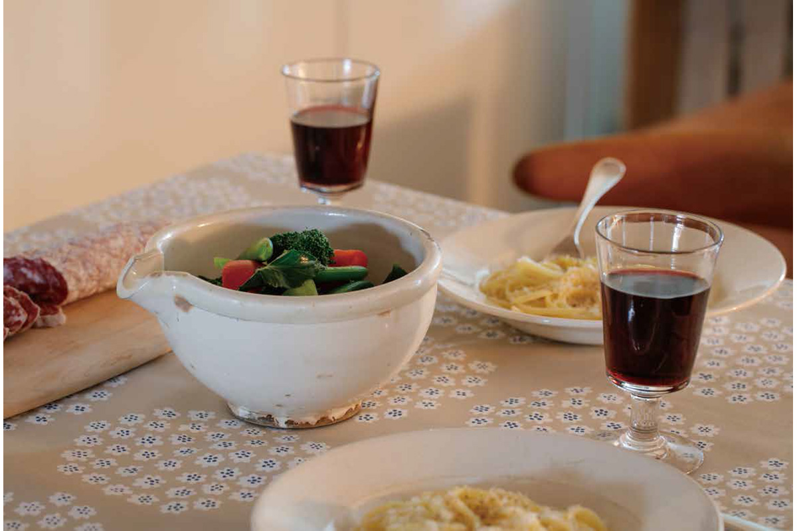

Префектура Ямагата · Ямагата · ремёсла
Керамика Хирасимидзу: белая катакути, которая подходит к любому столу

У подножия горы Титосэ на окраине Ямагаты с начала XIX века обжигают керамику Хирасимидзу. Её узнают по тёплому белому цвету и по катакути, широкой чаше с носиком, которая одинаково хорошо смотрится с японской и с европейской едой.
Посуда
Чаша с носиком из антикварной лавки
Свою старую катакути из Хирасимидзу стилист, много лет работающая с кулинарными книгами, нашла в лавке старых вещей. Её сразу привлекли пухлая белая форма и фактура, которая стала только глубже от долгого использования. Выбирая посуду, она всегда представляет, какое блюдо в неё ляжет. Старые вещи в обычной жизни она тогда ещё не использовала, но в этой чаше сразу увидела сираэ, салат из тофу с овощами, овощи в кунжутном соусе и тушёные блюда.
Катакути по своему происхождению вещь сугубо практичная, и в этом её красота. Среди круглых тарелок на столе она выделяется формой. Тёплый белый цвет подходит и для салата на европейский манер, и рядом со старыми французскими тарелками для пасты и супа такая чаша выглядит своей. С неё для владелицы началось удовольствие сочетать на одном столе посуду Востока и Запада.
История
Белое, как фарфор
Керамика Хирасимидзу появилась в конце периода Эдо недалеко от призамкового города Ямагата. Местные купцы торговали на большом пространстве, от Хоккайдо до Канто, а покупатели тогда хотели фарфор с синей росписью. Гончары стремились к белому цвету: покрывали изделия белым ангобом и расписывали поверх. В этом слышится та же тоска по фарфору Цзиндэчжэня и Имари, что и в истории европейской керамики, где белый фаянс тоже расписывали, подражая фарфору.
Печь создал в годы Бунка (1804–1818) гончар родом из провинции Хитати. По преданию, он учился ремеслу на керамике Сома в нынешней префектуре Фукусима. В 1845 году здесь впервые сумели обжечь фарфор.
Промысел рос при поддержке княжества, а потом префектуры, землевладельцев и купцов. Делали кухонную утварь и столовую посуду, белую керамику с росписью в духе Имари, а после 1868 года даже унитазы и таблички с именами для домов. Сюда приглашали мастеров из других княжеств, а в эпоху Мэйдзи (1868–1912) гончары ездили учиться в Сэто и Киото. К середине эпохи Мэйдзи печей стало 35, но когда по железной дороге в префектуру пошла посуда из других мест, промысел сократился. В 2020 году работали две печи: «Ситиэмон-гама» и «Сэйрю-гама».
Ремесло
Чаши, вложенные друг в друга
Печь «Ситиэмон-гама» работает с 1877 года. Мастер, родившийся в этой семье, рассказывает, что до конца 1960-х или начала 1970-х годов здесь обжигали в многокамерной печи нобори-гама, поднимающейся по склону. Делали чаши для замешивания теста, чаши, в которые перекладывали сваренный рис, и чаши, в которых когда-то растворяли красную краску бэни. Катакути служила для того, чтобы переливать соевый соус и сакэ из бочки в бутыли.
Печь разжигали всего несколько раз в год, поэтому старались загрузить её как можно плотнее: ставили друг в друга большие, средние и маленькие чаши, а внутрь ещё и чашечки для сакэ. Так и появились удобные наборы вложенных чаш. Керамика Хирасимидзу училась у гончаров со всей Японии и пережила смену эпох, и когда знаешь эту историю, её белая поверхность кажется ещё ближе.
Основы
Глина горы Титосэ и белый ангоб
Основа керамики Хирасимидзу это железистая глина горы Титосэ. Её покрывают белым ангобом, сверху прозрачной глазурью и обжигают. Со временем под блестящей глазурью белый слой становится только красивее. Местный белый ангоб перестали добывать, и в работах конца 2010-х годов белый цвет дают белой глазурью.
Старая катакути Хирасимидзу, с которой начинается эта история, имеет размеры 185 на 175 мм при высоте 97 мм.
Где посмотреть
Две печи у горы Титосэ
Обе печи стоят в квартале Хирасимидзу у подножия горы Титосэ. В 2026 году у «Ситиэмон-гама» работают магазин и занятия, где можно вылепить посуду руками или расписать её. «Сэйрю-гама» по-прежнему делает и продаёт свою посуду, но принимает ли она гостей в мастерской, лучше уточнить по телефону.
«Ситиэмон-гама»
- Адрес
- префектура Ямагата, Ямагата, Хирасимидзу, 153
- Телефон
- +81 23-642-7777
- Сайт
- sitiemon.com
«Сэйрю-гама»
- Адрес
- префектура Ямагата, Ямагата, Хирасимидзу, 50-1
- Телефон
- +81 23-631-2828
Фото: Юити Ногути.